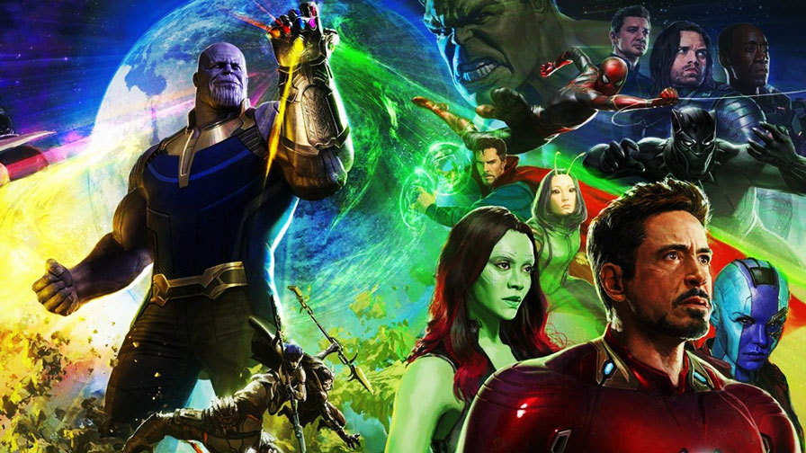
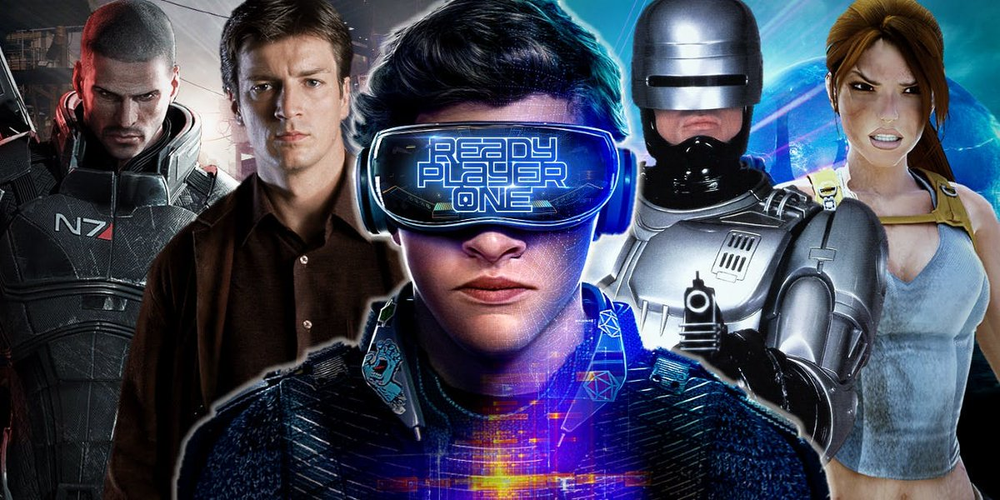
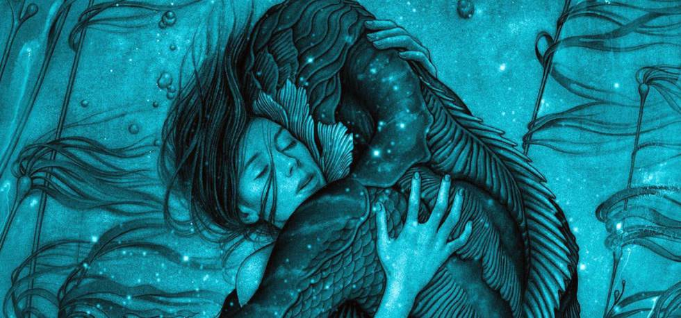

Roadside Cinema
As melhores crítcas de cinema você encontra aqui no RoadsideCinema. Para participar de nossa comunidade e receber notifações de novas críticas basta CADASTRAR-SE| Críticas | Notícias | Notícias | Comunidade |
|---|
| Críticas | Notícias | Notícias | Comunidade |
|---|

Lançado em 2012, Os Vingadores - The Avengers marcou o primeiro grande encontro dos heróis do Universo Cinematográfico da Marvel. Ali, nos deparamos com Homem de Ferro, Thor, Capitão América, Hulk, Viúva Negra, Gavião Arqueiro. Três anos depois foi a vez de Vingadores: Era de Ultron, que contou com a adição de Feiticeira Escarlate, Mercúrio, Visão e Máquina de Combate. Agora, passados mais três anos, temos Guerra Infinita e um número de heróis que até constrange os dois primeiros filmes.
Após entrarem na franquia fazendo barulho com Capitão América 2 - O Soldado Invernal e Capitão América: Guerra Civil, os diretores Joe Russo e Anthony Russo agora assumiram o posto de responsáveis pela maior marca do Universo Marvel: Os Vingadores. E eles não decepcionaram. O desafio de Guerra Civil, de colocar vários heróis em um mesmo espaço, agora é ainda mais elevado, uma vez que temos vários espaços diferentes Guerra Infinita retrata a empreitada definitiva de Thanos em busca das Joias do Infinito. Além de tentar descobrir onde se encontra a Joia da Alma, ele divide seu time em busca das restantes, sendo que duas estão na Terra. Sem entrar em maiores detalhes, a interessante como o filme consegue dividir sua narrativa por diversos pontos da galáxia, algo que ainda não havia acontecido.
inda que falhe em apresentar melhor os membros da Ordem Negra, o filme tem como grande mérito o seu vilão. Pode parecer estranho falar isso em um filme com mais de 20 heróis, mas é Thanos que rouba a cena. Graças aos efeitos visuais que melhoraram muito desde a primeira ponta do personagem em Os Vingadores e a uma grande atuação/trabalho de voz de Josh Brolin. Ao contrário do que temos normalmente nos filmes da Marvel (salvo Loki e Killmonger), aqui estamos diante de um antagonista com profundidade e até mesmo humanizado. Sua missão é inaceitável, mas não é impossível se relacionar com sua jornada e, principalmente, com sua dor.
Seguindo falando de Thanos, o filme se preocupa até em mostrar um pouco de sua história pregressa, especialmente com relação às filhas Gamora e Nebula. As interações do personagem com os heróis também são sempre interessantes e bem desenvolvidas. Não é mais um vilão genérico que será esquecido daqui a alguns dias.
Do lado dos heróis, o principal destaque é Thor, que assume uma posição central na história, e sem o peso cômico visto em Thor: Ragnarok. A divisão de tempo entre os heróis (ou núcleo de heróis) é bem feita, mas alguns acabam pouco aproveitados, como Viúva Negra, Pantera Negra e até mesmo o Capitão América. Tony Stark segue roubando a cena e o Homem-Aranha é o principal alívio cômico, e funciona.
Com um final apoteótico e obscuro, o longa abre caminho não apenas para Vingadores 4, mas também para outras produções do estúdio. Guerra Infinita é entretenimento de primeira qualidade e com uma escala raramente vista na tela grande. Nem tudo funciona, é bem verdade. Há certa frustração com o ápice da história e com o fato de que o filme não consegue entregar nada tão empolgante quanto a cena do aeroporto de Guerra Civil.
Mas o principal mérito dos Russo está em unir todo mundo num mesmo filme. Usando uma metáfora óbvia de carnaval, podemos dizer que eles receberam nota dez em harmonia. Tudo funciona em sintonia e as transições de núcleos são bem interessantes. O núcleo de Guardiões da Galáxia traz músicas e cores no estilo da produção e o mesmo acontece quando a ação vai parar em Wakanda.

Ninguém melhor que Steven Spielberg para levar às telas a adaptação de Jogador Nº 1 de Ernest Cline. O cineasta, afinal, é a maior influência por tudo aquilo que inspirou o autor do livro a criar sua distópica obra devota aos anos 1980. Mas não é o Spielberg "adulto", o histórico e dramático, que vemos aqui no comando de Jogador Nº 1, mas o cineasta moleque, aquele de Tubarão, E.T., Contatos Imediatos e Indiana Jones... o que torna a experiência ainda melhor.
Spielberg não apenas entende o milhar de referências do livro, mas ajudou a criá-las direta ou indiretamente - assim como a linguagem em que Cline se apoia em seu romance. O cineasta era sinônimo de aventura infanto-juvenil (juntamente com George Lucas, Robert Zemeckis, Richard Donner e tantos outros que transformaram o mundo e a cultura pop quatro décadas atrás) e aqui ele se recorda disso. O mestre retorna a sua melhor forma, homenageando essa época tão importante, em que os recém-empoderados diretores - que nos anos 70 passaram de coadjuvantes dos produtores a verdadeiros chefes criativos -, ganharam o direito de sonhar mais alto, com a indústria abrindo seus cofres para a fantasia e ficção científica, dando vida a imagens até então apenas registradas nas páginas das histórias em quadrinhos.
Com tal pedigree, Jogador Nº 1 é muito mais do que a habitual e cansada colagem de referências pop que temos aos montes hoje. A nostalgia é uma desculpa, não um objetivo. É no mundo criado (ou seria cocriado?) por Cline que Spielberg encontra a oportunidade para revisitar a inocência do passado. Até em estrutura o filme é um grande retorno aos clássicos oitentistas - e o final igualmente simples e genial é prova mais que perfeita disso.
Mas Jogador Nº 1 também é a forma que o cineasta encontrou para se atualizar. Ao ampliar as referências do filme ele mostra que não apenas entende as preferências de uma nova geração como também seu comportamento. O roteiro de Zak Penn e do próprio Ernest Cline é repleto de momentos sutis sobre quem somos hoje - sobre a sociedade online, conectada e ao mesmo tempo desligada da realidade.
No filme, como no livro, o ano é 2045. Nele, sobreviventes do período mais sombrio da humanidade precisam sobreviver em meio ao desemprego e a fome. Nessa realidade vive Wade Watts, um garoto pobre e órfão de 17 anos que, como escapismo, faz o mesmo que tantos outros milhões como ele: passa horas e horas conectado ao OASIS: um mundo online em que a realidade virtual turva os sentidos e coloca na busca por itens e moedas a satisfação que o corpo costumava encontrar de outras maneiras décadas atrás.
Ty Sheridan faz um bom Wade Watts em sua jornada para encontrar as três pistas que o falecido criador do sistema, James Halliday (um caricato Mark Rylance), deixou para o mundo. Ao vencedor, o controle sobre o OASIS - algo que move o industrialista Nolan Sorrento (Ben Mendelsohn, em papel que já virou recorrente para ele).
Há um maior equilíbrio na adaptação entre os mundos real e virtual, aproveitando os atores - que no OASIS encarnam avatares digitais. Há menos desafios e subtramas também, como esperado, mas o resultado, sob o comando de Spielberg, é muito bem amarrado. Cada referência tem um sentido e a qualidade do mundo virtual é estarrecedora, algo surpreendente em tempos em que basicamente todos os blockbusters do cinema contêm cenas quase que totalmente digitais. O OASIS é tão perfeito que em determinado momento, quando surge um ator em cena, há uma inversão no chamado "vale da estranheza". O humano parece irreal perante o digital. Spielberg mergulha tão fundo no mundo de Jogador Nº 1 que os limites se tornam borrados. Passado, presente, nostalgia, realidade, digital e orgânico fundem-se em um espetáculo visual digno de seus marcos passados. O ciclo ganha um reboot e - felizmente - o mestre está com o dedo no botão.

Uma ode aos desajustados, aos incompreendidos, aos outsiders, aos párias. Uma homenagem ao cinema. Um convite ao escapismo. É isso o que Guillermo del Toro faz com The Shape of Water, filme vencedor do Festival de Veneza 2017, uma produção de cativante beleza, interpretada por um elenco afiadíssimo (que deveria levar todos os prêmios da temporada).
Passada nos anos 1960 (quando a Guerra Fria pegava fogo), a história é apresentada como uma fábula, protagonizada por uma "princesa sem voz". “O que eu posso dizer sobre ela?”, anuncia o narrador. Mas ele logo se recolhe. Ao invés de dizer, del Toro mostra, usando a imagem como protagonista, na melhor concepção do que vem a ser o cinema.
Muda (e nem por isso infeliz), a faxineira Eliza Esposito (Sally Hawkins, hipnótica) trabalha numa base secreta do governo dos Estados Unidos, que inclui um laboratório comandado pelo doutor Hoffstetler (Michael Stuhlbarg). Uma criatura capturada nos confins da América do Sul é levada para lá. Pouco a pouco, Eliza vai se afeiçoando a ela. Sim, quem ama o feio bonito lhe parece.
Quando os norte-americanos decidem usar o "monstro" como cobaia na corrida espacial, entra em cena o agente policial moralista e sádico Strickland (um motivado Michael Shannon). Mas a vida do "visitante" corre perigo. E Eliza vai acionar o amigo e vizinho Giles (Richard Jenkins) - o mesmo narrador bissexto - e a companheira de trabalho Zelda (Octavia Spencer, a “boca” de Eliza, a quem cabe as falas mais divertidas) para ajudá-la em um elaborado plano.
Para Guillermo, não basta o preciso uso de todos os aspectos do cinema em confluência para um bem comum, ou seja, o de contar essa história (com destaque para o tom fluido azul esverdeado do lindo trabalho do diretor de fotografia Dan Laustsen). Eliza e Giles, um pintor fracassado, são fãs de musicais, cujo glamour servia como válvula de escape para a rotina de uma gente sonhadora. O elemento é aproveitado com maestria pelo roteiro assinado por del Toro e Vanessa Taylor dentro dessa estrutura narrativa. E até Carmem Miranda entra na dança.
Ficasse restrito ao aspecto lúdico, The Shape of Water já prestaria um serviço e tanto aos fãs de cinema. Mas, não. Guillermo vai ainda mais além, inserindo componentes… “picantes” que conferem ainda mais camadas a esse complexo e maduro microcosmos de personagens. É Shrek para maiores, se você preferir. Maiores de idade e evoluídos em maturidade.
A relevância do filme não seria possível (ou não teria o mesmo impacto, pelo menos) não fosse a sutileza da interpretação de Sally Hawkins, subaproveitada estrela de Simplesmente Feliz (2008), indicada ao Oscar de atriz coadjuvante por Blue Jasmine. Nesse ponto, o casting também diz muito sobre os objetivos da obra. Embora ninguém diga abertamente, para os padrões de Hollywood, Hawkins poderia ser considerada “feia”. Justo ela, que aqui diz com um simples gesto (ainda mais interpretando uma muda!) páginas e mais páginas de texto, em comparação a muita “bonita” bajulada aí pelo “meio”.
Nada é aleatório em The Shape of Water. Com o filme, Guillermo del Toro usa todas a ferramentas do cinema para criar um universo mágico, cheio de alegorias, que ilumina aqueles que não se encaixam. Se algum dia você já sentiu só no mundo, essa é a sua praia. Ou o seu tanque.
Veja também a nossa crítica dos 3 Piores Filmes Lançados em 2018 no cinema, por nosso melhor crítico:" O Japônes da Federal".Clique aqui para retornar ao topo da página.